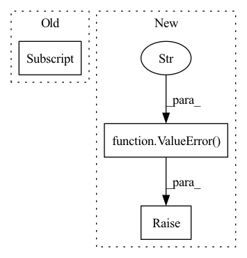

Pattern ID :1117
Before Change
if pos.shape[0] != view_dir.shape[0]:
raise ValueError(
"The number of samples must match. Got {}, {}, respectively."
.format(pos.shape[0], pos.shape[1] )
)
if pos.shape[-1] != self.pos_dim:
raise ValueError(After Change
if pos.shape[-1] != self.pos_dim:
raise ValueError(f"Expected {self.pos_dim}-D position vector. Got {pos.shape[-1]}.")
if view_dir.shape[-1] != self.view_dir_dim:
raise ValueError(
f"Expected {self.view_dir_dim}-D view direction vector. Got {view_dir.shape[-1]}."
)
x = self.relu_actvn(self.fc_in(pos))
x = self.relu_actvn(self.fc_1(x))
x = self.relu_actvn(self.fc_2(x))In pattern: SUPERPATTERN
Frequency: 3
Non-data size: 3
Instances Fragment ID: 4039389
Project Name: dvelopery0115/torch-nerf
Commit Name: 0b877b31ee0fa01d5409542c7eb7b3321b200e26
Time: 2022-06-15
Author: dreamy1534@kaist.ac.kr
File Name: src/network/nerf_mlp.py
M Class Name: NeRFMLP
N Class Name: NeRFMLP
M Method Name: forward(3)
N Method Name: forward(3)
M Parent Class: nn.Module
N Parent Class: nn.Module
M File Name: src/network/nerf_mlp.py
N File Name: src/network/nerf_mlp.py
M Start Line: 62
M End Line: 80
N Start Line: 59
N End Line: 69
Before Change
// get the distancese of each point to each RBF center
// (Nbatch,Nrbf,Ndim)
delta = (input[:,None,:] - self.centers[None,...] )
// Compute (INPUT-MU).T x Sigma^-1 * (INPUT-MU)-> (Nbatch,Nrbf)
X = ( torch.matmul(delta.unsqueeze(2),self.invCov).squeeze(2) * delta ).sum(2)After Change
elif self.kernel == "slater":
return self._slater_kernel(input)
else:
raise ValueError("Kernel not recognized" )
def _gaussian_kernel(self,input):
if self.sigma.requires_grad: Fragment ID: 4039385
Project Name: nlesc-jcer/qmctorch
Commit Name: d200b089e3f6aad463577f9769a09314efb48805
Time: 2019-06-19
Author: nicolas.gm.renaud@gmail.com
File Name: pyCHAMP/wavefunction/rbf.py
M Class Name: RBF
N Class Name: RBF
M Method Name: forward(2)
N Method Name: forward(2)
M Parent Class: nn.Module
N Parent Class: nn.Module
M File Name: pyCHAMP/wavefunction/rbf.py
N File Name: pyCHAMP/wavefunction/rbf.py
M Start Line: 150
M End Line: 170
N Start Line: 151
N End Line: 156
Before Change
self.sample()
def forward(self, x: torch.FloatTensor) -> torch.FloatTensor:
batch_size = x.shape[0]
return x * self.mask.repeat(batch_size, 1)
def sample(self):After Change
def forward(self, x: torch.FloatTensor) -> torch.FloatTensor:
if self.mask is None:
raise ValueError("Dropout mask hasn"t been sampled yet. Use .sample()." )
return x * self.mask
def sample(self, batch_size: int): Fragment ID: 4039382
Project Name: kaleidophon/nlp-uncertainty-zoo
Commit Name: 23e86cca8520591870fae2d45faad6c52fd14599
Time: 2021-06-16
Author: dennis.ulmer@gmx.de
File Name: src/dropout.py
M Class Name: VariationalDropout
N Class Name: VariationalDropout
M Method Name: forward(2)
N Method Name: forward(2)
M Parent Class: nn.Module
N Parent Class: nn.Module
M File Name: src/dropout.py
N File Name: src/dropout.py
M Start Line: 97
M End Line: 99
N Start Line: 96
N End Line: 99